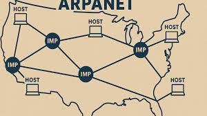
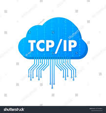
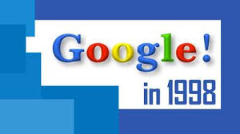

Linea de tiempo del Internet
El internet es una red mundial de computadoras conectadas entre sí que permite compartir información y comunicarse en tiempo real.
1969
Se crea ARPANET
La primera red que conecta computadoras entre universidades en EE.UU.

Arpanet
1971
Se envia el primer correo electronico

Fuente
1983
Se adopta el protocolo TCP/IP

Fuente
1989
Tim Berners-Lee propone la World Wide Web (WWW)
Fuente
1998
La Web se hace publica
Fuente
1998
Se funda Google

Fuente
2004-2006
Surgen redes sociales como Facebook, Yotube y Twitter
Fuente